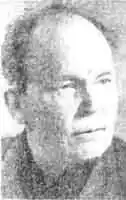

РУДЬ Микола Данилович (1912-1989)Народився 9 травня 1912 року в селі Олександрівка Зачепилівського району в багатодітній хліборобській сім'ї.
"Руді (по-вуличному Панкрати, прозвані так по імені мого діда, який після руйнації Січі осів між Ореллю і Берестовою), — пише Микола Данилович в автобіографії, — землі мали 8-9 десятин на 12 душ."
"Я закінчив досить успішно Зачепилівську семирічку, дякуючи викладачеві мови та літератури, письменнику-плужанину Федору Євтихеєвичу Злидню, який взяв мене на постій, завбачивши в моїх учнівських писаннях щось гідне уваги", — читаємо в автобіографії. Перший віршик Миколи Даниловича про Дніпрогес був опублікований 1928 року в додатку до журналу "Червоні квіти". Тепло згадує й іншого свого вчителя літератора Івана Мироновича Прищепу. В 1929 році М. Д. Рудь вступає до Красноградського педтехнікуму. Не отримавши місця в гуртожитку і талонів у студентську їдальню, він залишив педтехнікум і подався на Донбас. У тридцяті роки був членом літературної організації "Молодняк". В 1936 році з'являється перша книжка М. Рудя — віршована збірка "Найближче". З повоєнного доробку відомі книжки "На Поділлі", "Час клопоту і сподівань", "Гомін до схід сонця", "Синій птах", "Дивень". Як письменник самобутньо-неповторний, як майстер художньої прози Микола Рудь відкрився і утвердився, безперечно, своїм циклом романів "Боривітер" — "І не сказала люблю", "З матір'ю на самоті", "Не жди, не клич". У своїх творах Микола Рудь закликав по совісті працювати й жити, по-синівському ставитися до природи, рідної землі, своєї історії, а найголовніше — над усе любити Батьківщину, щоденно творити, нести людям добре, чисте, корисне, істинно благородне. За заслуги в розвитку літератури і в зв'язку з семидесятиріччям від дня народження Микола Данилович Рудь нагороджений орденом Дружби народів. Помер Микола Данилович у Києві 22 жовтня 1989 року.